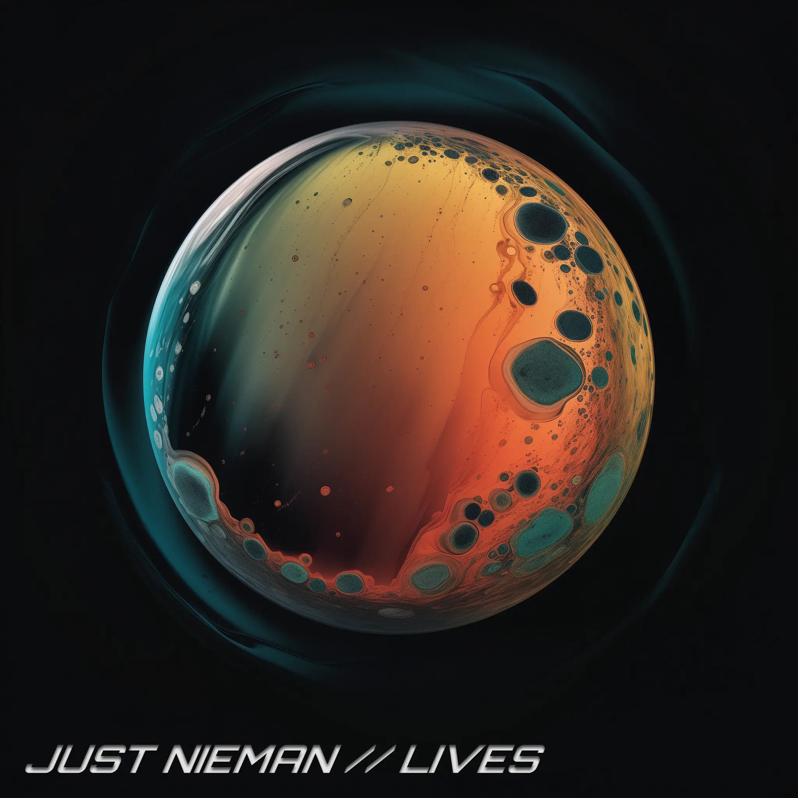

JUST NIEMAN
MUSICIAN | PRODUCER | DJ
SoundCloud
Follow me on Insta
Stream “It's Not That Deep”
Stream “My Music”
Stream “Personal”

Stream “Lives”
For business inquiries, please contact:
contact@niemans.website